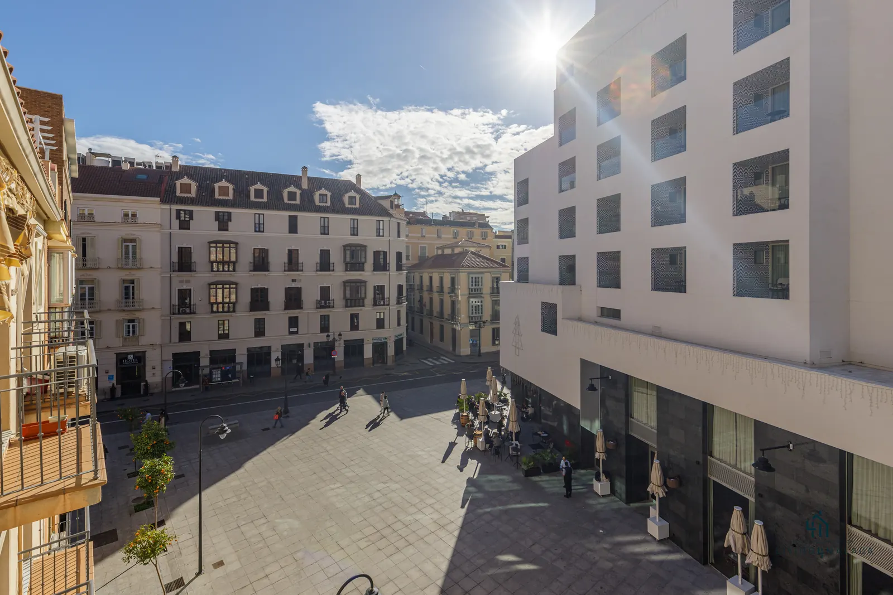
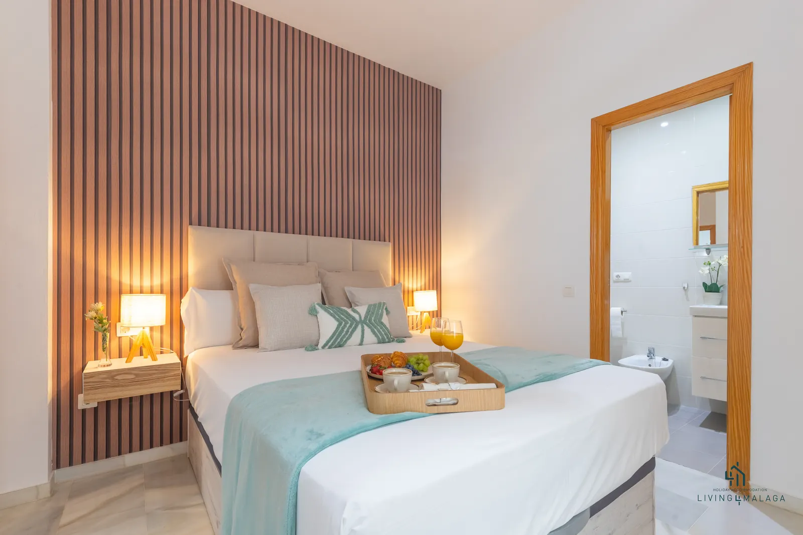

Apartments at Hoyo de Esparteros 9, in the old town
The Málaga Fair (Feria de Málaga) takes place in August and, under its bylaw, includes the 19th, a local holiday in 2027. In 2026 it ran from 15 to 22 August, and its daytime part, the city-centre fair, filled Calle Larios and the old-town squares from 12:00 to 18:00. Calle Larios is a 6-minute walk from Urban Chic Apartments at Calle Hoyo de Esparteros 9. The 2027 dates have not been approved yet.
The night fair is at the Cortijo de Torres fairground. In 2026 the marquees opened from 14:00 and closed between 02:00 and 06:00 (up to 07:00 on holidays and their eves, and always at 07:00 in the youth area). The last closing time was 07:00 on 23 August. The bylaw is under review: the June 2026 draft proposes 06:00 as the latest closing time for all marquees.
Bus F
In 2026 EMT bus line F left from the north side of the Alameda, between Calle Larios and Puerta del Mar, and ran to the fairground 24 hours a day for €2, cash or card.
Train
Málaga-Centro Alameda station is 6 minutes away on foot. During the 2026 Fair Renfe ran C1 trains every 20 minutes at night from 15 to 22 August, with extra departures from Centro Alameda between 21:30 and 00:10. The press named Victoria Kent as the station closest to the fairground.
Taxi
In 2026 the fairground had two taxi ranks open 24 hours, and in the old town the ranks at Atarazanas and Puerta del Mar, among others, stayed open.
The City Council asks visitors to use the car as little as possible during the Fair. In 2026 cars couldn't enter the inner old town from 12:00 to 18:00, except for emergencies, with normal traffic expected back around 21:00.
Parking
The Camas public car park is 4 minutes away on foot and the Avenida de Andalucía car park 4. During the 2026 Fair the council's city-centre car parks, both of these included, opened 24 hours.
Fireworks
In 2026, on the night of Friday 14 August, the eve of the Fair, there was a drone show at the port at 23:50 and the fireworks-and-music show at 00:00, on the cruise terminal access road.
With children
In 2026 the Feria Mágica, with workshops, theatre and puppets, was held on Plaza de la Merced from 16 to 22 August.
Heat
The Fair is in mid-August. In 2026 it fell within Andalusia's high-temperature protocol. All the apartments have air conditioning, and in 2026 there was a first-aid point on Plaza de la Marina from 14:00 to 21:00.
The apartments in pictures
Urban Penthouse Terrace: Private terrace with outdoor sofa and artificial grassUrban Penthouse Terrace: The terrace under the awning

Urban Chic 3B: Plaza de Hoyo de Esparteros from the balconyUrban Chic 3B: Bedroom with two single beds

Urban Chic 2A: Bedroom with an upholstered headboard and slatted wallUrban Chic 2A: Sofa, coffee table and balcony
Before you book
Dates. The 2027 Fair dates have not been approved yet. The City Council sets them each year; 19 August 2027 is already a local holiday and 16 August a regional holiday in Andalusia.
Noise. The building is right in the old town, facing the square: street noise can be heard inside the apartments and on the penthouse terrace.
Lift. The building has a lift. The penthouse is on the fourth and top floor.
Payment
30% is paid when you book. Four days before arrival you'll get an email to complete full payment of the booking.
Check-in
With an electronic lock, from 16:00. Earlier access isn't possible. Check-out by 12:00.
Linen and cleaning
There are always clean sheets and one set of towels per guest; extra towels are available for an additional charge. Stays of up to 7 nights don't include cleaning or a change of towels and sheets. For 8 to 12 nights we leave spare bed linen and towels for you to change. From 13 nights we come once a week to change them.
Deposit
€300 for any incidents caused by guests during the stay.
Cancellation
Flexible rates can be cancelled free of charge up to 5 days before arrival; after that, the 30% paid when booking is not refunded. Non-refundable rates allow no date changes, and cancelling them costs 100% of the stay. For stays of more than a month, you need to cancel at least one month before arrival. You'll see the exact policy before confirming.
The 2027 dates have not been approved yet. Under the local bylaw it is held in August and includes the 19th, the anniversary of Málaga joining the Crown of Castile and a local holiday in 2027. In 2026 it ran from 15 to 22 August.
Where is the city-centre fair?
On Calle Larios, Plaza de la Constitución and other old-town squares; in 2026, from 12:00 to 18:00. Calle Larios is a 6-minute walk from Hoyo de Esparteros 9.
How do I get to the Cortijo de Torres fairground?
In 2026 EMT bus line F left from the north side of the Alameda, between Calle Larios and Puerta del Mar, and ran 24 hours a day for €2. There were also extra Cercanías trains from Centro Alameda, 6 minutes away on foot, and taxis.
Is there music at night in the old town?
In 2026 street music at the city-centre fair stopped at 18:00; after that it was allowed only inside licensed venues. The night-time party is at the fairground.
Which apartment suits a group?
For six: Urban Penthouse Terrace, with three bedrooms, two bathrooms and a private terrace, or Urban Chic 3B, with two bedrooms and two bathrooms. The building has a lift.
Where is the best price?
On the official website. It carries no intermediary commissions; the difference varies by date.
Book your stay for the Fair
Best price guaranteed on the official website. Check availability: